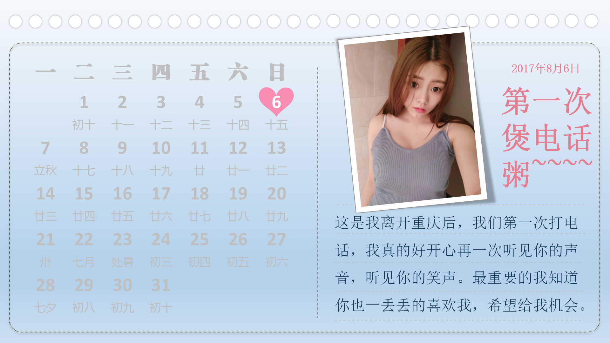

思思七夕快乐，傻媳妇永远爱你
按键盘 "↓" 开始倾听我的祝福，翻阅我们的故事。
思思，每一秒有点夸张，但是我每一天每一分钟都在想着你

自从小红走进了小明的世界，小明脸上有了灿烂的笑容

可是小红会喜欢小明吗？

小明期待着回到重庆的那一天

小明会第一时间跑到你的面前

每次想到小红
小明下班后
都会突然的傻笑

回家后等待着小红互道晚安，希望今夜能梦到小红

小明常幻想着他手捧束花来找小红的场景

小明幻想着这世界会添加了一对幸福的恋人

他们一起坐公交去玩

他们一起去Shopping

他们一同去了约定好的海边

他们一起幸福的当着吃货

他们一起幸福快乐的生活

小明愿意学习他不会的技能

煮饭

每天早上，吃着小明做的美食

小明天天憧憬着那种幸福
因为自己有了归宿
那个有小红在的地方

他们可能偶尔也会吵架

小明不想这样


一定是我有什么做的不对，小明在想
小红是用来宠的，我肯定做错了
如果没有小红在身边，窗外就没有风景

如果没有小红在身后


小明又怎会飞的更高更远
小明不想这样。他要改变自己
要变得更成熟，赚更多的钱，给小红幸福

我理解的爱就像花草一样
需要用包容来浇灌
可以禁得起风吹日晒
长长久久

再到后来，小明把小红接回了市区
小明准备定居在这里


屋子里堆满了礼物 小明好开心 因为他想象着小红来时 开心的样子

想想后面还有一辈子 小明好开心 因为可以和小红 去全世界好多地方玩
小明会继续努力拼搏
一步一步追到小红，珍惜她

小明现在很快乐，因为他找到了小红。他相信后面的每天都会是快乐的
简简单单，珍惜享受着与小红在一起的每一个刻

天天说想你，肯定会腻的，那我只能这样表达出我的爱和想念啦，我知道你喜欢听歌，希望这个礼物能让你开心。思思，以后可能你还会认识很多喜欢你的人，我不是第一个不是最后一个，但我绝对是最长久的一个，直到没有别的男孩在喜欢你，或者，直到你喜欢了我。


小红：永远有多远？
小明：比时间多一秒就是永远，我会永远守护你
小红：世界有多大？
小明：你走到哪里，世界就有多大
愿得一人心，白首不相离


七夕快乐-我未来的女朋友
有点不要脸，嘻嘻~~~
思思，给我一次机会，永远不放手。
相信像这样的故事会一直延续下去。
无论精彩、平淡都会是我们喜欢的。
我爱你！
-- 按“Esc"键有惊喜